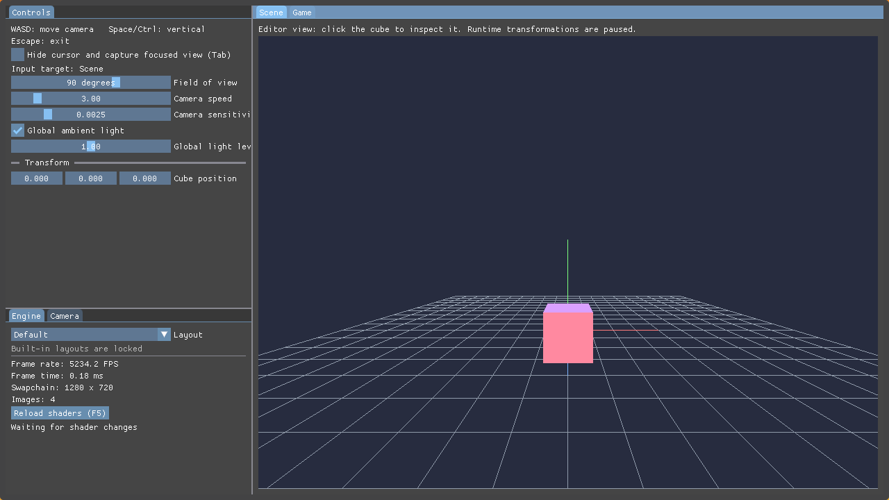
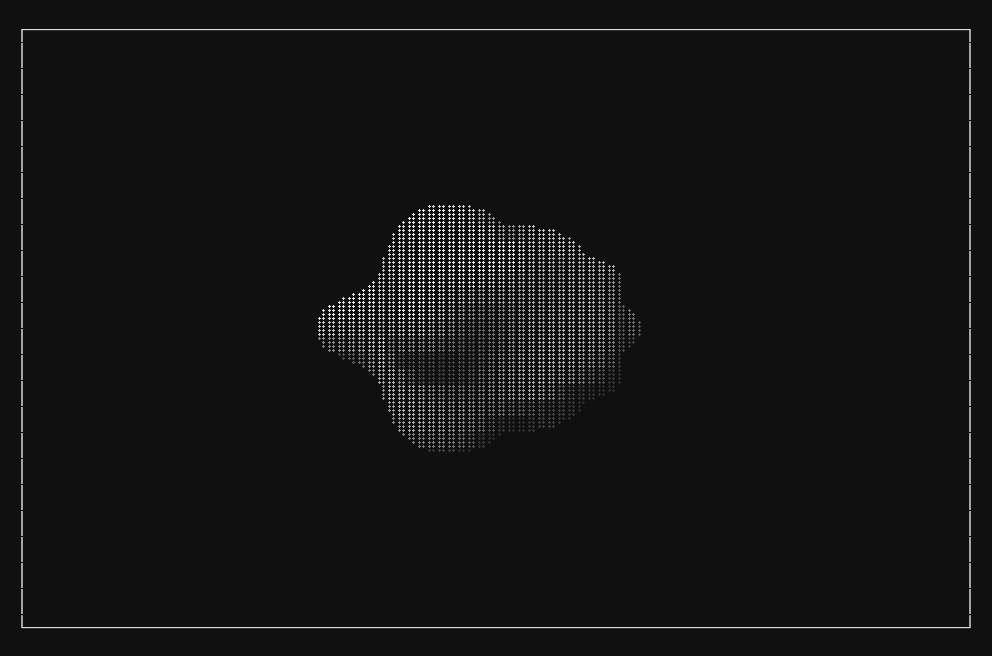

Exploring the benefits and limitations of rendering geometry
defined by distance functions.
As an undergraduate researcher, I build the C++ application
and controls for a custom SDF rendering engine in OpenGL and
GLSL, working alongside another undergraduate researcher who
writes most of the shaders.
Wrote the quaternion math behind camera rotation, plus the
controls for ray travel distance and surface-hit tolerance.
Pass a scene ID from CPU to GPU to switch between SDF
functions, and added shader hot reload by comparing saved
files against a cached version.
Built in FPS and frame-time counters to help test changes as
we go.
The screenshots show different fractals or infinitely
repeating geometry created through trigonometric functions.
Repeating-surface experiment. Visible artifacts are part of
the result.
GRAPHICS SOFTWARE
In progress
Blossom
An experimental 3D game engine written in C++ and GLSL using
Vulkan, GLFW, Dear ImGui, and a custom math library. It renders
separate scene and game views with interactive camera and editor
controls.

Vulkan scene view with a cube, grid, and editor controls.
Separate scene and game views, with a scene grid and animated
cube.
Camera controls, cube inspection and position editing, and
adjustable ambient lighting.
Shader reloading while the engine is running.
C++ / GLSL / Vulkan / GLFW / Dear ImGui / Custom math
A dependency-free C renderer that rasterizes meshes and
raymarches signed distance fields on the CPU, displaying 3D
scenes in the terminal using Braille characters and ANSI colors.

Raymarched sphere SDF with surface displacement.
Builds the terminal UI itself with termios for input and ANSI
escape codes for display and color, no third-party
dependencies.
Supports both mesh rasterization and signed distance field
raymarching on the CPU, with Braille characters for the image
and ANSI escape codes for color.
Wrote a small vector type in C instead of plain arrays, since
a fixed-size array meant passing width and height everywhere
and couldn't support resizing the terminal window intuitively.
When I am not at my computer learning about all things
programming and graphics, you will find me out on the golf
course or running around my hometown. From a young age I was out
on the golf course getting that little white ball in the hole.
Likewise, from a young age I also ran religiously. While in high
school I pursued those two sports heavily and was able to get to
state in running and regionals (missed state by one spot my
senior year) in golf.
From coordinates to pixels
ROTATION → PERSPECTIVE
A simple 3D renderer inside JS. Written with help from Tsoding's video on 3D rendering.